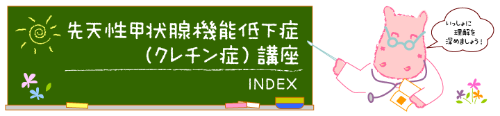

先天性甲状腺機能低下症（クレチン症）講座INDEX
|  |
先天性甲状腺機能低下症（クレチン症）について
- Lesson1：甲状腺とその働き
- Lesson2：先天性甲状腺機能低下症（クレチン症）はどんな病気？
- Lesson3：先天性甲状腺機能低下症（クレチン症）の歴史
- Lesson4：先天性甲状腺機能低下症（クレチン症）の診断
- Lesson5：甲状腺機能の検査
先天性甲状腺機能低下症（クレチン症）の治療について
ヨウ素について
マススクリーニングを知っていますか？
小児慢性疾患について
先天性甲状腺機能低下症（クレチン症）の病因について
- Lesson14：先天性甲状腺機能低下症（クレチン症）の病因
- Lesson15：異所性甲状腺
- Lesson16：甲状腺ホルモン合成障害
- Lesson17：潜在性先天性甲状腺機能低下症（軽症クレチン症）
- Lesson18：一過性（先天性）甲状腺機能低下症
- Lesson19：未熟児、低出生体重児の場合